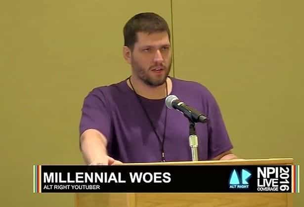

< < < Back
British Media Doxes Small-Time Youtuber For Having Nationalist Views – Return Of Kings
Media outlets in Great Britain have published the location of a right-wing anti-immigration YouTube vlogger, attempting to incite a mob against him. Because he lives in a small community in Scotland, including an image of Colin Robertson’s house in particular opens him up to violent antifa attacks.
The Scots racist whose hate-filled videos have made him a global YouTube star can be unmasked by the Record today as a jobless ex-student who lives with his dad.
He found notoriety with his Millennial Woes blog and gave a speech at a US rally where far-right extremists shouted, “Hail Trump” and made Nazi salutes. He has gone to great lengths to hide his identity.
Robertson’s YouTube channel, Millennial Woes, has less than 25,000 subscribers, making him far from a “global Youtube star” that the Daily Record portrays him as for justification of their dox. While explicitly condemning violence, Robertson argues that Scotland and Great Britain, not to mention Europe and the Western world, are being inundated with migrants and that local European or European-derived cultures are subsequently being swallowed up without any proper intervention by the government or media.
Just like the character assassination of Kenneth Bone, the cherubic audience member at the US Presidential debate in St. Louis, the media’s targeting of Colin Robertson highlights how comparatively unknown, even fully unknown people with right-wing or other unacceptable views are being harassed and punished for their beliefs. The purpose is to scare off other Average Joes with the same or similar political outlooks and prevent them from organizing and speaking out.
Kenneth Bone knows what Colin Robertson is feeling at the moment.
Along with the doxxing, various British newspapers fired plain unnecessary or woefully incorrect broadsides at Robertson’s character. He was described as an “ex-student” (isn’t everybody?) living with his father, as if living with one’s parent/s to save money for a house or as a temporary arrangement after a move is deserving of scorn. The “living in mom’s basement” attack has previously been used against Roosh by The Daily Mail and other media outlets. Despite the fact that he was briefly visiting family due to years spent overseas, pseudo-journalists described the proprietor of Return Of Kings with the kind of false terms that directly mimic leftist talking points about those with contrarian political and social opinions.
In the same vein as Roosh’s 2016 ordeal and the extreme harassment of his family by The Daily Mail, The Daily Record in Scotland and The Mirror in England published images of Robertson’s father’s home. England’s The Sun does not seem to have gone as far, but their intention to make him unsafe in his own town is more or less identical to what the other outlets have tried to do. Although Robertson has nearly 25,000 YouTube subscribers, this is hardly the threshold for deciding to publish details of where someone lives. When newspapers or magazines pinpoint where a celebrity lives, that celebrity invariably has the money to afford extensive private security, including by residing in gated communities and erecting walls. Robertson lacks this largesse and the media knows it.
Robertson has not been “unmasked”; he has been showing his face for years

Colin Robertson spoke at the National Policy Institute’s Washington D.C. conference last year.
Another tired old lie being spruiked by the newspapers attacking Colin Robertson is that he has finally been “revealed” and “unmasked.” Nothing could be further from the truth. Notwithstanding that Robertson has never published where he lives (and why would he?), he has made his video presentations on camera for an extended period of time and attended the recent NPI conference in Washington D.C. to deliver a speech. This was the same conference that led to a media witch hunt against Richard Spencer and Roosh’s refusal to disavow him.
Again, this example of falsehood harks back to Roosh’s experiences, this time with The Dr. Oz Show. Dr. Oz erroneously claimed that Roosh had come out from behind his keyboard, even though his name and face had been in the public domain for years. Yet the most cursory glance at Roosh’s personal website or Return Of Kings by Dr. Oz’s assistants and handlers would have confirmed this. Or, amazingly, the television host and celebrity doctor could have bothered to do his own research before pontificating.
And if a right-wing figure running his or her own website or platform were to hide their name and location, who could blame them? After all, Roosh and his family both faced serious threats requiring police intervention. I am sure Colin Robertson, both his parents, and his wider family and social circles are under the same vicious bombardment currently. Interestingly, reporting on the content of these vile threats will not pique the media’s interest even slightly, irrespective of the inspiration they gave those who are threatening.
People whose homes or addresses are not published? They’re called leftists
Guess who hasn’t been doxed by the media?
Journalists do not dox militant leftists and when they do they’re fired for it. Just ask Michael Tracey. Vice showed Tracey the door for ostensibly doxing Lena Dunham on Twitter, after he claimed that she was lying about having voted in the 2016 New York Democratic primary. As much as it pains me to admit this, Lena Dunham is a much more high-profile (but definitely not high-brow) figure than Colin Robertson. But I cannot remember a time when the media dutifully and gleefully doxed her or those like her, especially following her disgusting book revelations about digitally penetrating her sister. It is doubtful she received any threats from being indirectly doxed by Michael Tracey and if she did, she has both the means to protect herself and an obliging media to portray her as the century’s biggest victim.
Unfortunately, Roosh’s dire discussion of how the media assassinates people is ringing more and more true as time goes by. “News” outlets are banking on inflaming the anger of leftists and other easily aroused people so they can act as the elites’ “cat’s paw,” frightening, injuring, or even killing political freethinkers. They want anyone who excoriates the leftist narrative to lose their jobs, general livelihoods, and social reputations. In the case of Donald Trump, Nigel Farage, and Geert Wilders, they cannot do this. So they have turned their focus onto regular people who feel the compulsion to speak up.
So how long will it be until Return Of Kings has to start reporting on media-inspired deaths instead of “mere” media-inspired harassment and doxing?
Read More: British Police “Investigate” Long Dead British Prime Minister Over “Sex Abuse” Claims